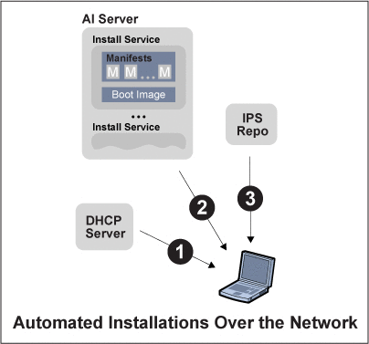

OpenSolaris 2010.03 Automated Installer Guide
|
|||
|
1. What's New For Automated Installations 2. Introduction to the Automated Installer How Do I Use the Automated Installer? Automated Installation Benefits 3. Automated Network Install Task Map 4. Automated Installations That Boot From Media 5. Set up an Automated Install Server 6. How to Administer an Automated Install Server 7. How to Administer a Custom Install Client 8. How to Administer Manifest Files 9. How to Manage Client Installations |
What Is an Automated Installation?The automated installer is used to automate the installation of the OpenSolaris OS on one or more SPARC and x86 systems. The installations can differ in architecture, packages installed, disk capacity, and other parameters. To boot and install client systems over the network, the minimal configuration necessary to use the automated installer is to have one system as the install server and one client on which to install. On the server, you set up an install service, which is associated with manifests, or specifications, for specific x86 installations or SPARC installations. Manifests can include information such as target device, additional packages, partition information, and other parameters. When the client boots, this boot initiates a search for a manifest that matches the client's machine specifications. When a matching manifest is found, the client is installed with the OpenSolaris release according to the specifications in the manifest files. An automated installation over the network to a client system, as shown in the graphic, performs the following core steps:
Alternately, starting with the OpenSolaris 2010.03 release, you can install the OpenSolaris OS directly on individual SPARC or x86 client systems by booting from AI media such as a CD, DVD, or a USB stick. This method provides a fast and simple way to install a few individual systems, without setting up an install server. You can use this method even if your SPARC systems do not have WAN Boot capability. See Chapter 4, Automated Installations That Boot From Media. |
||
|